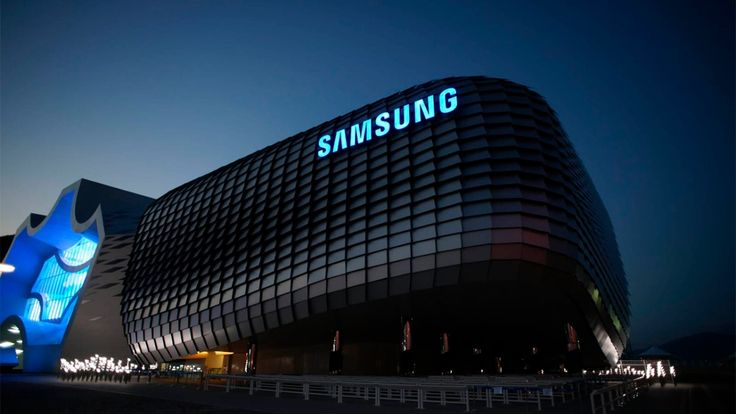
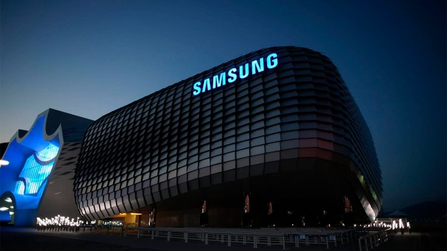

Historia de la Compañía
Samsung fue fundada en 1938 en Corea del Sur como una empresa comercial. Con el paso de los años, se transformó en un gigante tecnológico, destacando en áreas como electrónica, telecomunicaciones y electrodomésticos.
Samsung fue fundada en 1938 en Corea del Sur como una empresa comercial. Con el paso de los años, se transformó en un gigante tecnológico, destacando en áreas como electrónica, telecomunicaciones y electrodomésticos.
Hoy, Samsung tiene operaciones en más de 80 países y emplea a cientos de miles de personas. Su influencia en el mundo de la tecnología es reconocida a nivel mundial.

La serie Galaxy ha revolucionado el mercado de los teléfonos inteligentes, destacando por su calidad de cámara, pantallas Dynamic AMOLED y tecnología 5G.
Los televisores Samsung QLED ofrecen una calidad de imagen superior, con colores vibrantes y tecnología Quantum Dot. Ideales para una experiencia cinematográfica en casa.
Samsung también lidera en el desarrollo de electrodomésticos inteligentes, como refrigeradores Family Hub, lavadoras de carga frontal y aspiradoras robotizadas.
El área de investigación de Samsung se centra en inteligencia artificial, redes 6G, robótica y realidad aumentada, asegurando su liderazgo en innovación.
Samsung desarrolla productos ecológicos y busca reducir su huella de carbono mediante el uso de materiales reciclados y eficiencia energética en sus dispositivos.